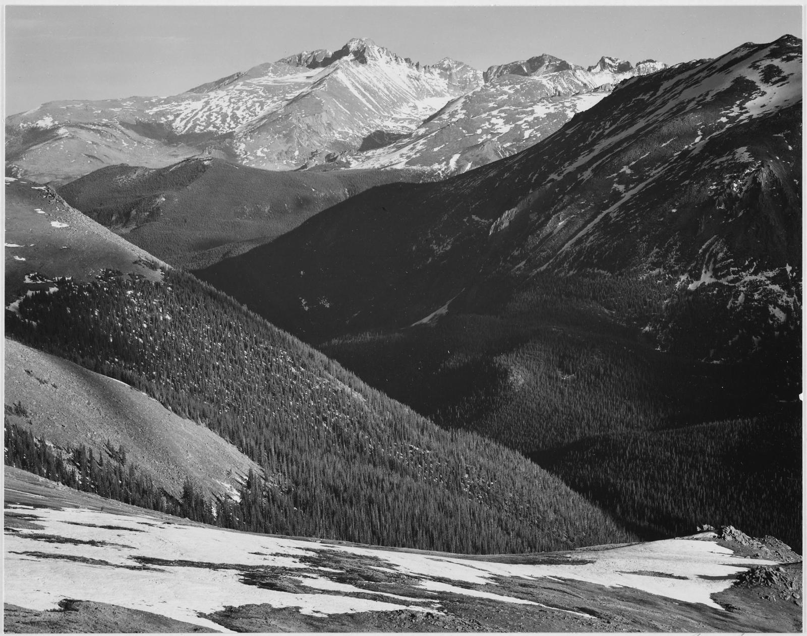

Famous Photographers
Today:
Welcome to Lens & Legacy. This website introduces six famous photographers, their styles and some of their photographs.
Meet the photographers
About this website
This website looks at landscape, portrait, street and documentary photography. You can read about the photographers, view their work and try a short quiz.
Featured photographers
Landscape
Ansel Adams
Known for black-and-white landscape photography.
Discover the photographer
Documentary
Dorothea Lange
Known for documentary photographs of everyday people.
Discover the photographer
Portrait
Julia Margaret Cameron
Known for portraits with soft focus and natural light.
Discover the photographer